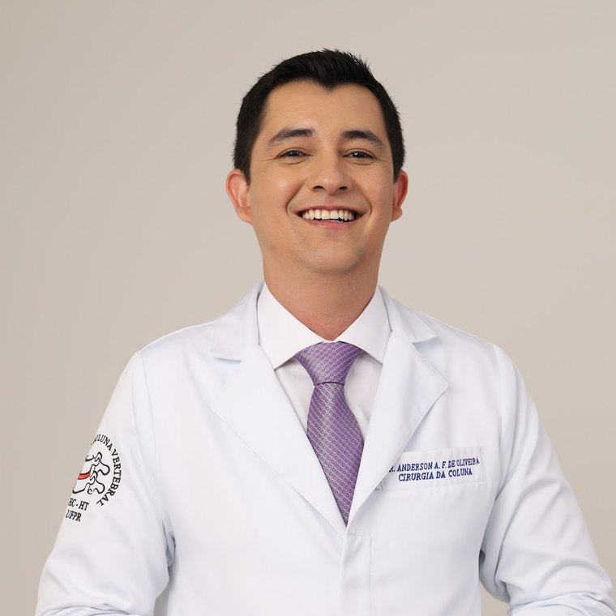

Ortopedista e Traumatologista · CRM-BA 29157 · RQE 18983
Dr. Anderson Oliveira
Ortopedista e traumatologista que atua em cirurgia da coluna, em Feira de Santana.
Fellowship em cirurgia da coluna no Grupo da Coluna Vertebral – Hospital do Trabalhador/UFPR, serviço credenciado pela Sociedade Brasileira de Coluna, da qual é associado. Dor nas costas, hérnia de disco, cervical, escoliose e fraturas da coluna — com exame cuidadoso e decisão explicada.
★★★★★5,0 no Google · 20 avaliaçõesPor onde começar
O que trouxe você até aqui?
Escolha o assunto e leia no seu tempo. Cada página explica o que costuma ser avaliado, as opções de tratamento e quando não vale esperar. A indicação é individual, definida em consulta.
Dor nas costas que não passa
Travou, dói ao sentar, piora no fim do dia — o que costuma ser e o que ajuda.
Dor nas costasCiáticaA dor desce pela perna
Hérnia de disco, formigamento e a dor ciática: avaliação e tratamento.
Hérnia de discoCervicalPescoço duro, braço formigando
Dor no pescoço e dor que irradia para o ombro, o braço ou a mão.
Coluna cervicalPrimeira vezComo é a consulta
O que levar, a conversa e o exame físico, passo a passo.
A consultaTambém: Escoliose, deformidades e fraturasQuando a cirurgia é consideradaSobre o Dr. AndersonOnde atendo
A linha da coluna
Do pescoço à lombar, cada região tem a sua página.
A coluna tem três regiões móveis: cervical, torácica e lombar. As queixas mudam de uma para outra — e o exame também. Comece pela região onde dói.
As vértebras são desenhadas de forma esquemática, só para orientar a leitura.
- C1–C7
Cervical · O pescoço
Dor no pescoço, dor que desce para o braço, formigamento nas mãos e artrodese cervical.
- T1–T12
Torácica · O meio das costas
Escoliose e outras deformidades da coluna, e fraturas por trauma ou por osteoporose.
Degraus do cuidado
A cirurgia é um degrau, não o ponto de partida.
A maioria das dores na coluna é tratada sem cirurgia. O cuidado avança degrau a degrau, conforme o exame, a resposta ao tratamento e o que você deseja. A indicação é individual, definida em consulta.
- 1Conversa e exame
História da dor, exame físico e, quando necessário, exames de imagem.
- 2Tratamento não cirúrgico
Orientação, atividade física adaptada, fisioterapia e medicação, conforme o caso.
- 3Tratamento intervencionista da dor
Bloqueios e infiltrações na coluna, em casos selecionados.
- 4Cirurgia, quando indicada
Técnicas minimamente invasivas, endoscópicas ou artrodese — decididas em conjunto.

A consulta
Ouvir, examinar e explicar.
Na coluna, o exame físico diz muito: como você anda, a força, a sensibilidade e os reflexos ajudam a entender de onde vem a dor e se há um nervo envolvido.
- 01A sua história
Quando começou, o que piora, o que alivia, o trabalho, os esportes e os tratamentos já feitos.
- 02O exame físico
Postura, movimento, marcha, força, sensibilidade e reflexos.
- 03Exames, só se ajudarem
Raio-X, ressonância ou tomografia quando mudam a conduta — nem toda dor precisa de imagem.
- 04O plano, em palavras simples
O que é, o que fazer agora e os próximos passos. A indicação é individual, definida em consulta.
Trajetória
Da ortopedia à cirurgia da coluna.
Datas do histórico público do CNES; fellowship na página do serviço credenciado pela SBC; registro no MedGuias.
- 2015–2020Medicina clínica
Médico clínico e de saúde da família, segundo os vínculos do histórico público do CNES.
CNES - 2018Ortopedia e Traumatologia
Primeiro vínculo como médico ortopedista no CNES. Título TEOT 16969 e RQE 18983 em Ortopedia e Traumatologia.
CNES · MedGuias - Desde 2019Hospital Geral Clériston Andrade
Ortopedista e traumatologista do hospital, em Feira de Santana, desde novembro de 2019.
CNES - A partir de 2022Fellowship em cirurgia da coluna
Grupo da Coluna Vertebral – HC – Hospital do Trabalhador – UFPR, em Curitiba, serviço credenciado pela Sociedade Brasileira de Coluna.
SBC · CNES - HojeConsultório em Feira de Santana
Atende no Edifício Premier Medical and Business, em Santa Mônica. Associado da Sociedade Brasileira de Coluna.
Google · SBC
Sociedade Brasileira de Coluna
Formação em coluna com registro público.
O Dr. Anderson aparece em dois lugares do site da Sociedade Brasileira de Coluna: na busca oficial de médicos associados e na lista de fellows de um serviço credenciado pela sociedade.
“Anderson Augusto Faria de Oliveira · CRM: 29157 BA · Feira de Santana”
Busca de médicos associados da SBC · ver a fonte
“Grupo da Coluna Vertebral - HC - Hosp. do Trabalhador - UFPR […] Fellows […] Anderson Augusto Faria De Oliveira”
Página do serviço credenciado pela SBC · ver a fonte
Avaliações
O que os pacientes escreveram no Google.
Nota 5,0 em 20 avaliações na ficha pública do consultório. Trechos reais, com nome abreviado.
Excelente atendimento desde a consulta até o acompanhamento. Médico muito atencioso.
Atendimento humano, atencioso e extremamente competente. O doutor explica tudo com clareza, sem pressa, e transmite muita segurança.
Excelente profissional, super indico a todos. Super empático!!!
Conteúdos
Onde conferir cada informação.
Os cadastros públicos de onde vêm os fatos deste site: registro, título, fellowship, vínculos e avaliações.
Cadastro de associado: Anderson Augusto Faria de Oliveira, CRM 29157 BA, Feira de Santana.
Abrir ↗Sociedade Brasileira de ColunaGrupo da Coluna Vertebral – HC – Hosp. do Trabalhador – UFPRServiço credenciado onde ele aparece na lista de fellows.
Abrir ↗MedGuiasCRM, RQE e TEOTRegistro em Ortopedia e Traumatologia: CRM-BA 29157 · RQE 18983 · TEOT 16.969.
Abrir ↗CNES · Ministério da SaúdeHistórico profissionalVínculos como ortopedista e traumatologista, entre eles o Hospital Geral Clériston Andrade desde 2019.
Abrir ↗GoogleNota 5,0 · 20 avaliaçõesFicha pública do consultório, com endereço, fotos e avaliações.
Abrir ↗WhatsAppConsultório Dr. Anderson OliveiraConta do consultório para agendar a consulta: (75) 99919-9595.
Abrir ↗Onde atendo
Edifício Premier, sala 617.
Na Av. Getúlio Vargas, em Santa Mônica, Feira de Santana. Atendimento com hora marcada — confirme o dia e o horário pelo WhatsApp.
Av. Getúlio Vargas, 2525, sala 617 (6º andar) · Santa Mônica · Feira de Santana – BA · CEP 44077-015
Como chegarConfirme o dia e o horário pelo WhatsApp do consultório, (75) 99919-9595.
Dor nas costas depois de queda ou acidente, perda de força nas pernas, dormência na região da virilha e das nádegas, perda do controle da urina ou das fezes, ou dor com febre? Não espere a consulta: procure o pronto-socorro mais próximo ou o SAMU (192). O consultório atende com hora marcada e não é serviço de urgência.
Dúvidas frequentes
Perguntas comuns
Quando procurar um ortopedista por dor na coluna?
Quando a dor dura mais de algumas semanas, volta com frequência, atrapalha o sono ou o trabalho, desce para a perna ou para o braço, ou vem com formigamento ou fraqueza. Veja dor nas costas e lombar.
Toda hérnia de disco precisa de cirurgia?
Não. Boa parte das pessoas com hérnia de disco tem alívio com tratamento não cirúrgico. A cirurgia é considerada em situações específicas. A indicação é individual, definida em consulta. Veja hérnia de disco.
Preciso levar exames?
Se tiver, leve os exames de imagem anteriores com os laudos e a lista de remédios em uso. Se não tiver, tudo bem: a necessidade de exames é avaliada na consulta. Veja a consulta.
O Dr. Anderson é especialista em quê?
Ele tem título de especialista em Ortopedia e Traumatologia (RQE 18983, TEOT 16969) e atua em cirurgia da coluna, com fellowship em serviço credenciado pela Sociedade Brasileira de Coluna. Veja sobre o Dr. Anderson.
Atende convênio?
Confirme as condições de atendimento com o consultório pelo WhatsApp (75) 99919-9595.
Qual é o horário?
Atendimento com hora marcada — confirme o dia e o horário pelo WhatsApp.
Agende
Dor na coluna merece uma avaliação com calma.
Consulta com hora marcada no Edifício Premier Medical and Business, em Santa Mônica. Fale com o consultório pelo WhatsApp (75) 99919-9595.